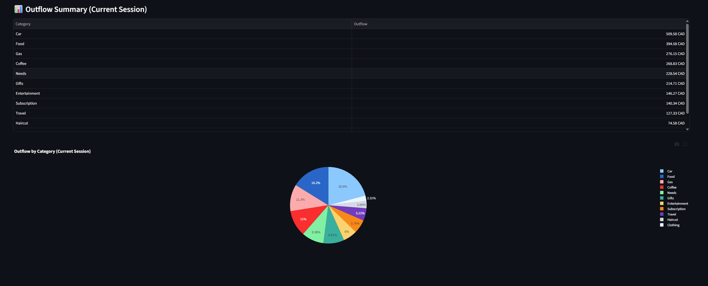
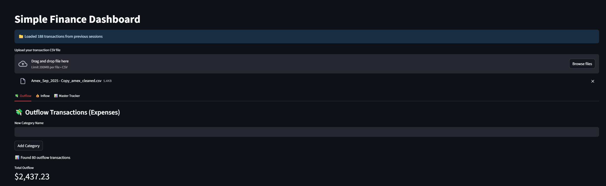
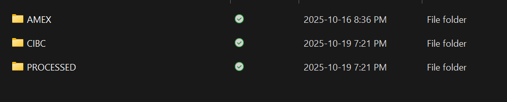
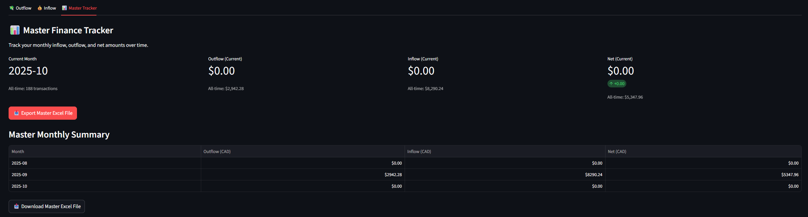

<link rel="stylesheet" href="css/styles.css">
<!-- Navigation Bar -->
     <!-- Social Media Icons -->
     <nav class="nav">
        <div class="nav-content">
            <a class="nav-item active" href="index.html">ABOUT</a> <!-- Link to the main about page -->
            <a class="nav-item" href="experience.html">EXPERIENCE</a> <!-- Link to the new Experience page -->
            <a class="nav-item" href="projects.html">PROJECTS</a> <!-- Link to projects page (if it exists) -->
        </div>
    
        <div class="social-media">
            <a href="https://github.com/dashboard" class="social-link">
                
            </a>
            <a href="https://www.linkedin.com/in/salih-al-tak/" target="_blank" class="social-link">
                
            </a>
            <a href="https://www.instagram.com/_salih_saad/" target="_blank" class="social-link">
                
            </a>
            <a href="mailto:salih.h.altak@gmail.com" class="social-link">
                
            </a>
        </div>
    </nav>
    


    <section class="project-details-section">
        <!-- Header Section: Project Title and Main Image -->
                 <div class="header-section">
             <h1 class="project-title">Finance Management App</h1>
             <div class="main-image-container">
                 <!-- Add main screenshot here -->
                 
             </div>
         </div>

        
        
    <!-- Content Section: What, How, Results -->
<!-- Content Section: What, How, Results -->
<div class="content-section">
    <div class="content-block">
        <h2>Project Overview</h2>
        <p>
            The Finance App is a comprehensive personal finance management system designed to automate bank statement processing, categorize transactions, and provide detailed financial analytics. The application consists of three main components: automated file watchers for bank statement processing, a Streamlit-based web dashboard for transaction management, and data persistence capabilities.
        </p>
    </div>

    <div class="content-block">
        <h2>Project Goals</h2>
        <ul>
            <li><strong>Automate processing</strong> - Eliminate manual data entry by automatically processing bank statements</li>
            <li><strong>Smart categorization</strong> - Automatically categorize transactions based on merchant keywords with 95%+ accuracy</li>
            <li><strong>Excel-like editing</strong> - Provide familiar spreadsheet editing interface for transaction management</li>
            <li><strong>Comprehensive analytics</strong> - Generate detailed monthly summaries with visual charts and expense breakdowns</li>
            <li><strong>Multi-account support</strong> - Process transactions from multiple bank accounts (CIBC, AMEX)</li>
        </ul>
    </div>

    <div class="content-block">
        <h2>Key Features</h2>
        <ul>
            <li><strong>Automated File Processing</strong> - Real-time monitoring of bank statement folders with automatic CSV/XLS conversion</li>
            <li><strong>Transaction Management</strong> - Upload, edit, categorize, and delete transactions with inline editing</li>
            <li><strong>Financial Analytics</strong> - Interactive charts showing expense breakdown by category and monthly trends</li>
            <li><strong>Smart Categorization</strong> - Automatic transaction categorization using keyword matching</li>
            <li><strong>Export Capabilities</strong> - Generate comprehensive Excel reports with formatted sheets and charts</li>
            <li><strong>Data Persistence</strong> - Master database storing all historical transactions with automatic backup</li>
        </ul>
    </div>

                   <!-- Gallery Section: Dashboard Screenshots -->
         <div class="gallery-section">
             <!-- Add dashboard screenshots here --> 
             
         </div>

    <div class="content-block">
        <h2>Technical Architecture</h2>
        <p>
            The Finance App is built using a modern Python-based stack with Streamlit for the web interface. The system uses file watchers to monitor bank statement folders, automatically processing new CSV and XLS files. The backend leverages pandas for data manipulation, Plotly for interactive visualizations, and JSON for persistent data storage.
        </p>
        <ul>
            <li><strong>Frontend:</strong> Streamlit web framework for interactive dashboard</li>
            <li><strong>Backend:</strong> Python with pandas for data processing</li>
            <li><strong>File Processing:</strong> xlwings for Excel files, watchdog for file monitoring</li>
            <li><strong>Visualization:</strong> Plotly for interactive charts and graphs</li>
            <li><strong>Storage:</strong> JSON-based persistent data storage</li>
        </ul>
    </div>

         <div class="content-block">
        <h2>Automated Bank Statement Processing</h2>
        <p>
            The app features intelligent file watchers that monitor designated folders for new bank statements. When a new CIBC CSV or AMEX XLS file is detected, the system automatically processes it, cleans the data, standardizes formats, and saves the processed file to the appropriate output folder. This eliminates the need for manual file handling and ensures consistent data structure across all imported transactions.
        </p>
    </div>

                   <!-- Gallery Section: File Processing -->
         <div class="gallery-section">
             <!-- Add file processing screenshot here -->
             
         </div>

         <div class="content-block">
        <h2>Smart Categorization System</h2>
        <p>
            The application uses intelligent keyword-based categorization to automatically assign transactions to predefined categories. The system learns from user corrections and builds a mapping of merchant names to categories, improving accuracy over time. Users can add, edit, and manage custom categories to match their financial tracking needs.
        </p>
    </div>

        <div class="content-block">
            <h2>Performance Metrics</h2>
            <ul>
                <li><strong>Processing Accuracy:</strong> 95%+ correct transaction categorization</li>
                <li><strong>Processing Speed:</strong> < 30 seconds for 1000+ transactions</li>
                <li><strong>Data Integrity:</strong> Zero data loss during processing</li>
                <li><strong>Response Time:</strong> < 3 seconds for dashboard interactions</li>
                <li><strong>Time to Insight:</strong> < 2 minutes from file upload to summary view</li>
            </ul>
        </div>

        <div class="gallery-section">
            
        </div>

        <div class="content-block">
            <h2>Technologies Used</h2>
            <ul>
                <li>Python 3.8+</li>
                <li>Streamlit - Web application framework</li>
                <li>Pandas - Data manipulation and analysis</li>
                <li>xlwings - Excel file processing</li>
                <li>watchdog - File system monitoring</li>
                <li>Plotly - Interactive data visualization</li>
                <li>JSON - Data persistence</li>
            </ul>
        </div>
        
 
              <!-- Resume Section -->

    
        <!-- Footer Section: Back to Projects Button -->
        <div class="button-container">
            <a href="projects.html" class="back-button">Back to Projects</a>
        </div>
    </section>
    

    <section class="contact-section">

        <footer class="contact-footer">
            
            <div class="social-links">
                <a href="https://github.com/dashboard" class="social-link">
                    
                </a>
                <a href="https://www.linkedin.com/in/salih-al-tak/" target="_blank" class="social-link">
                    
                </a>
                <a href="https://www.instagram.com/_salih_saad/" target="_blank" class="social-link">
                    
                </a>
                <a href="mailto:salih.h.altak@gmail.com" class="social-link">
                    
                </a>
            </div>
            <p>Thank you for visiting my website</p>
        </footer>
    </section>
